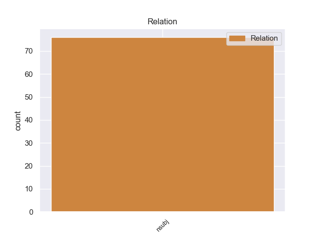
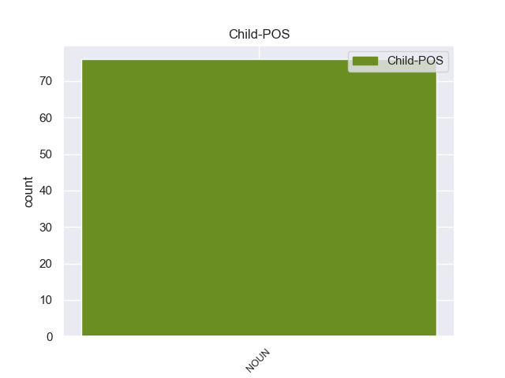

Distribution of features within this leaf



Agreement Rules sorted by frequency.
- When the dependent token is the nominal subject(nsubj) of the head token, and the dependent token is NOUN.
1 La _ _ _ _ 0 _ _ _
2 operación _ _ _ _ 0 _ _ _
3 se _ _ _ _ 0 _ _ _
4 llevó llevó NOUN _ Mood=Ind|Number=Sing|Person=3|Tense=Pres|VerbForm=Fin 0 _ _ _
5 a _ _ _ _ 0 _ _ _
6 cabo _ _ _ _ 0 _ _ _
7 en _ _ _ _ 0 _ _ _
8 al _ _ _ _ 0 _ _ _
9 oriente _ _ _ _ 0 _ _ _
10 de _ _ _ _ 0 _ _ _
11 el _ _ _ _ 0 _ _ _
12 Tolima _ _ _ _ 0 _ _ _
13 , _ _ _ _ 0 _ _ _
14 donde _ _ _ _ 0 _ _ _
15 la _ _ _ _ 0 _ _ _
16 zona zona NOUN _ Gender=Fem|Number=Sing 4 nsubj _ _
17 era _ _ _ _ 0 _ _ _
18 controlada _ _ _ _ 0 _ _ _
19 por _ _ _ _ 0 _ _ _
20 las _ _ _ _ 0 _ _ _
21 FARC _ _ _ _ 0 _ _ _
22 , _ _ _ _ 0 _ _ _
23 existía _ _ _ _ 0 _ _ _
24 un _ _ _ _ 0 _ _ _
25 campamento _ _ _ _ 0 _ _ _
26 que _ _ _ _ 0 _ _ _
27 producía _ _ _ _ 0 _ _ _
28 cocaína _ _ _ _ 0 _ _ _
29 y _ _ _ _ 0 _ _ _
30 heroína _ _ _ _ 0 _ _ _
31 . _ _ _ _ 0 _ _ _
Disagree Examples:
1 Según _ _ _ _ 0 _ _ _
2 han _ _ _ _ 0 _ _ _
3 puntualizado puntualizar VERB _ Gender=Masc|Number=Sing|Tense=Past|VerbForm=Part 0 _ _ _
4 fuentes fuente NOUN _ Gender=Fem|Number=Plur 3 nsubj _ _
5 de _ _ _ _ 0 _ _ _
6 Aerte _ _ _ _ 0 _ _ _
7 en _ _ _ _ 0 _ _ _
8 un _ _ _ _ 0 _ _ _
9 comunicado _ _ _ _ 0 _ _ _
10 , _ _ _ _ 0 _ _ _
11 esto _ _ _ _ 0 _ _ _
12 sucede _ _ _ _ 0 _ _ _
13 tanto _ _ _ _ 0 _ _ _
14 en _ _ _ _ 0 _ _ _
15 el _ _ _ _ 0 _ _ _
16 ámbito _ _ _ _ 0 _ _ _
17 estatal _ _ _ _ 0 _ _ _
18 como _ _ _ _ 0 _ _ _
19 en _ _ _ _ 0 _ _ _
20 la _ _ _ _ 0 _ _ _
21 Comunitat _ _ _ _ 0 _ _ _
22 Valenciana _ _ _ _ 0 _ _ _
23 , _ _ _ _ 0 _ _ _
24 y _ _ _ _ 0 _ _ _
25 es _ _ _ _ 0 _ _ _
26 uno _ _ _ _ 0 _ _ _
27 de _ _ _ _ 0 _ _ _
28 los _ _ _ _ 0 _ _ _
29 aspectos _ _ _ _ 0 _ _ _
30 que _ _ _ _ 0 _ _ _
31 se _ _ _ _ 0 _ _ _
32 ha _ _ _ _ 0 _ _ _
33 tratado _ _ _ _ 0 _ _ _
34 en _ _ _ _ 0 _ _ _
35 la _ _ _ _ 0 _ _ _
36 clausura _ _ _ _ 0 _ _ _
37 de _ _ _ _ 0 _ _ _
38 la _ _ _ _ 0 _ _ _
39 asamblea _ _ _ _ 0 _ _ _
40 de _ _ _ _ 0 _ _ _
41 la _ _ _ _ 0 _ _ _
42 patronal _ _ _ _ 0 _ _ _
43 , _ _ _ _ 0 _ _ _
44 a _ _ _ _ 0 _ _ _
45 la _ _ _ _ 0 _ _ _
46 que _ _ _ _ 0 _ _ _
47 han _ _ _ _ 0 _ _ _
48 asistido _ _ _ _ 0 _ _ _
49 150 _ _ _ _ 0 _ _ _
50 empresarios _ _ _ _ 0 _ _ _
51 y _ _ _ _ 0 _ _ _
52 la _ _ _ _ 0 _ _ _
53 consellera _ _ _ _ 0 _ _ _
54 de _ _ _ _ 0 _ _ _
55 Bienestar _ _ _ _ 0 _ _ _
56 Social _ _ _ _ 0 _ _ _
57 , _ _ _ _ 0 _ _ _
58 Agélica _ _ _ _ 0 _ _ _
59 Such _ _ _ _ 0 _ _ _
60 . _ _ _ _ 0 _ _ _
1 Según _ _ _ _ 0 _ _ _
2 han _ _ _ _ 0 _ _ _
3 puntualizado _ _ _ _ 0 _ _ _
4 fuentes _ _ _ _ 0 _ _ _
5 de _ _ _ _ 0 _ _ _
6 Aerte _ _ _ _ 0 _ _ _
7 en _ _ _ _ 0 _ _ _
8 un _ _ _ _ 0 _ _ _
9 comunicado _ _ _ _ 0 _ _ _
10 , _ _ _ _ 0 _ _ _
11 esto _ _ _ _ 0 _ _ _
12 sucede _ _ _ _ 0 _ _ _
13 tanto _ _ _ _ 0 _ _ _
14 en _ _ _ _ 0 _ _ _
15 el _ _ _ _ 0 _ _ _
16 ámbito _ _ _ _ 0 _ _ _
17 estatal _ _ _ _ 0 _ _ _
18 como _ _ _ _ 0 _ _ _
19 en _ _ _ _ 0 _ _ _
20 la _ _ _ _ 0 _ _ _
21 Comunitat _ _ _ _ 0 _ _ _
22 Valenciana _ _ _ _ 0 _ _ _
23 , _ _ _ _ 0 _ _ _
24 y _ _ _ _ 0 _ _ _
25 es _ _ _ _ 0 _ _ _
26 uno _ _ _ _ 0 _ _ _
27 de _ _ _ _ 0 _ _ _
28 los _ _ _ _ 0 _ _ _
29 aspectos _ _ _ _ 0 _ _ _
30 que _ _ _ _ 0 _ _ _
31 se _ _ _ _ 0 _ _ _
32 ha _ _ _ _ 0 _ _ _
33 tratado _ _ _ _ 0 _ _ _
34 en _ _ _ _ 0 _ _ _
35 la _ _ _ _ 0 _ _ _
36 clausura _ _ _ _ 0 _ _ _
37 de _ _ _ _ 0 _ _ _
38 la _ _ _ _ 0 _ _ _
39 asamblea _ _ _ _ 0 _ _ _
40 de _ _ _ _ 0 _ _ _
41 la _ _ _ _ 0 _ _ _
42 patronal _ _ _ _ 0 _ _ _
43 , _ _ _ _ 0 _ _ _
44 a _ _ _ _ 0 _ _ _
45 la _ _ _ _ 0 _ _ _
46 que _ _ _ _ 0 _ _ _
47 han _ _ _ _ 0 _ _ _
48 asistido asistir VERB _ Gender=Masc|Number=Sing|Tense=Past|VerbForm=Part 0 _ _ _
49 150 _ _ _ _ 0 _ _ _
50 empresarios empresario NOUN _ Gender=Masc|Number=Plur 48 nsubj _ _
51 y _ _ _ _ 0 _ _ _
52 la _ _ _ _ 0 _ _ _
53 consellera _ _ _ _ 0 _ _ _
54 de _ _ _ _ 0 _ _ _
55 Bienestar _ _ _ _ 0 _ _ _
56 Social _ _ _ _ 0 _ _ _
57 , _ _ _ _ 0 _ _ _
58 Agélica _ _ _ _ 0 _ _ _
59 Such _ _ _ _ 0 _ _ _
60 . _ _ _ _ 0 _ _ _
1 Un _ _ _ _ 0 _ _ _
2 proceso _ _ _ _ 0 _ _ _
3 de _ _ _ _ 0 _ _ _
4 aprendizaje _ _ _ _ 0 _ _ _
5 que _ _ _ _ 0 _ _ _
6 se _ _ _ _ 0 _ _ _
7 desvelará _ _ _ _ 0 _ _ _
8 adoctrinamiento adoctrinamiento DET _ Gender=Masc|Number=Plur 0 _ _ _
9 de _ _ _ _ 0 _ _ _
10 la _ _ _ _ 0 _ _ _
11 alumna _ _ _ _ 0 _ _ _
12 hasta _ _ _ _ 0 _ _ _
13 la _ _ _ _ 0 _ _ _
14 aniquilación _ _ _ _ 0 _ _ _
15 de _ _ _ _ 0 _ _ _
16 su _ _ _ _ 0 _ _ _
17 propia _ _ _ _ 0 _ _ _
18 conciencia _ _ _ _ 0 _ _ _
19 de _ _ _ _ 0 _ _ _
20 una _ _ _ _ 0 _ _ _
21 manera manera NOUN _ Gender=Fem|Number=Sing 8 nsubj _ _
22 progresiva _ _ _ _ 0 _ _ _
23 y _ _ _ _ 0 _ _ _
24 cada _ _ _ _ 0 _ _ _
25 vez _ _ _ _ 0 _ _ _
26 más _ _ _ _ 0 _ _ _
27 violenta _ _ _ _ 0 _ _ _
28 . _ _ _ _ 0 _ _ _
1 Después _ _ _ _ 0 _ _ _
2 de _ _ _ _ 0 _ _ _
3 graduar _ _ _ _ 0 _ _ _
4 se _ _ _ _ 0 _ _ _
5 de _ _ _ _ 0 _ _ _
6 la _ _ _ _ 0 _ _ _
7 Escuela escuela NOUN _ Gender=Fem|Number=Sing 0 _ _ _
8 Superior _ _ _ _ 0 _ _ _
9 Comercial _ _ _ _ 0 _ _ _
10 Maebashi _ _ _ _ 0 _ _ _
11 , _ _ _ _ 0 _ _ _
12 Adachi adachi NOUN _ Gender=Masc|Number=Plur 7 nsubj _ _
13 debutó _ _ _ _ 0 _ _ _
14 como _ _ _ _ 0 _ _ _
15 mangaka _ _ _ _ 0 _ _ _
16 en _ _ _ _ 0 _ _ _
17 1970 _ _ _ _ 0 _ _ _
18 con _ _ _ _ 0 _ _ _
19 la _ _ _ _ 0 _ _ _
20 serie _ _ _ _ 0 _ _ _
21 Kieta _ _ _ _ 0 _ _ _
22 Bakuon _ _ _ _ 0 _ _ _
23 , _ _ _ _ 0 _ _ _
24 basada _ _ _ _ 0 _ _ _
25 en _ _ _ _ 0 _ _ _
26 un _ _ _ _ 0 _ _ _
27 manga _ _ _ _ 0 _ _ _
28 creado _ _ _ _ 0 _ _ _
29 originalmente _ _ _ _ 0 _ _ _
30 por _ _ _ _ 0 _ _ _
31 Satoru _ _ _ _ 0 _ _ _
32 Ozawa _ _ _ _ 0 _ _ _
33 . _ _ _ _ 0 _ _ _
1 El _ _ _ _ 0 _ _ _
2 4 _ _ _ _ 0 _ _ _
3 de _ _ _ _ 0 _ _ _
4 septiembre _ _ _ _ 0 _ _ _
5 , _ _ _ _ 0 _ _ _
6 Beltré _ _ _ _ 0 _ _ _
7 bateó _ _ _ _ 0 _ _ _
8 una _ _ _ _ 0 _ _ _
9 línea línea NOUN _ Gender=Fem|Number=Sing 21 nsubj _ _
10 a _ _ _ _ 0 _ _ _
11 el _ _ _ _ 0 _ _ _
12 jardín _ _ _ _ 0 _ _ _
13 derecho _ _ _ _ 0 _ _ _
14 contra _ _ _ _ 0 _ _ _
15 los _ _ _ _ 0 _ _ _
16 Medias _ _ _ _ 0 _ _ _
17 Rojas _ _ _ _ 0 _ _ _
18 de _ _ _ _ 0 _ _ _
19 Boston _ _ _ _ 0 _ _ _
20 para _ _ _ _ 0 _ _ _
21 acumular acumular VERB _ Gender=Masc|Number=Plur 0 _ _ _
22 el _ _ _ _ 0 _ _ _
23 hit _ _ _ _ 0 _ _ _
24 número _ _ _ _ 0 _ _ _
25 2,000 _ _ _ _ 0 _ _ _
26 de _ _ _ _ 0 _ _ _
27 su _ _ _ _ 0 _ _ _
28 carrera _ _ _ _ 0 _ _ _
29 . _ _ _ _ 0 _ _ _